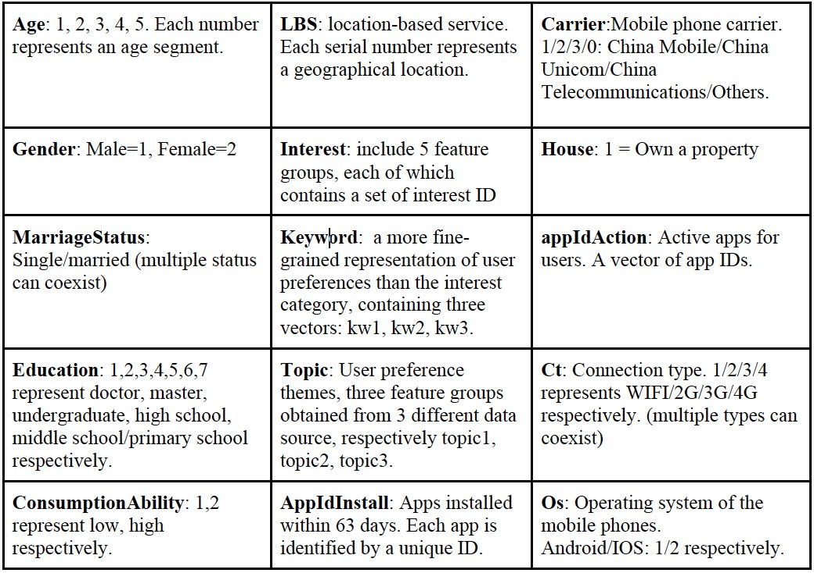

[comment]:<>(## A Look-alike Customer Model Based on Dynamic User and Advertisement Features)
Project Member: Wanxin Xu, Yunfei Gao, Ting Liu
Email_address:WanxinXu2019@u.northwestern.edu,yunfeigao2018@u.northwestern.edu, tingliu2017@u.northwestern.edu
Course Name: EECS 349 Machine Learning
Instructor: Professor Doug Downey
University Name: Northwestern University
1. Overview of the Task
Look-alike models are used to classify larger users into smaller seed groups to create reach for advertisers. The users classified into a specific seed group will reflect the benchmark characteristics of the seed. In summary, look-alike modeling can be used to reach new prospects that look like a marketer’s best customers.Our task is to build a look-alike customer model on top of a set of user features and advertisement features. This project is from an online advertising algorithm competition. Look-alike model, based on a seed group (also known as seed packets) provided by advertisers can automatically calculate a similar group of people (known as an extended population). This online machine learning competition provides a dataset containing hundreds of seed groups, the advertisement features corresponding to the seed groups and the user features corresponding to mass user candidates. The entire dataset is divided into a training set and a test set. The training set labels the users who belong to the seed package and the users who do not belong to the seed package (i.e. the positive and negative samples) as +1 and -1, respectively. The testing set will test whether the algorithm can accurately determine whether the user in the test set belongs to the corresponding seed package. The seed packets in training set and testing set are corresponding to each other.
In order to test whether the algorithm can understand user features and seed packets well, the results will include the score of how likely the user candidates belong to a specific seed group. The higher score indicates the higher potential of the candidate belonging to this seed group.
2. Learners and Features
We tried four learners which are random forests, k-nearest-neighbor, lightGBM and FFM.
The entire dataset includes four files which are training data, testing data, user features and advertisement(Ad) features and it is available at http://algo.qq.com/home/information/info.html.
Training data: Each row in the train.csv represents a training sample containing three attributes: “aid, uid, label” in the set. Among them, aid uniquely identifies an AD, and uid uniquely identifies one user. The value of the sample label is +1 or -1, where +1 represents the seed user, and -1 represents non-seed users. To simplify the problem, a seed package only corresponds to an AD aid, and the two are one-to-one correspondence.
Testing data: Each row in the test.csv represents a testing sample containing two attributes which are “aid, uid” with the same meaning as discussed above.
User feature: Each row in the userFeature.data represents features of one specific user. Missing attributes are recorded as “0”. The features to be used are listed in Table 1.
Table 1 Advertisement features

Advertisement features are listed in the Table 2.
Table 2 Advertisement features
3. Key results of Baseline method
Because of the large size of the dataset, we first selected two subsets of the original dataset as our training set with a total of 14000 rows and a testing set of 6000 rows. There are some features as stated above which are represented in vectors of strings which cannot be directly relayed into the classifier. Therefore we had to first deal with the features with vector values. We used the CountVectorizier() from sklearn to transform strings to matrix representation.
As is shown in the table, the F1 score, accuracy, AUC of RF are all higher than kNN. However the confusion matrix indicates that RF just simply classified all the labels to the ‘0’ class which has the same performance of ZeroR. We imply that this comes from the huge imbalance of the dataset. The code is available at https://github.com/WanxinXu27/EECS349Project
We extracted the feature importance information from the RF classifier and included the figure in this report. As is indicated in the figure, feature 1, feature 9, feature 0, which represent uid, LBS, aid, seem to be the three most importance features in the classification. It makes sense as the uid, aid and location should have strong impact on the classification.
4. Preliminary Results with much complicated classifiers
The classifier discussed in class seemed not to perform well on this large, sparse dataset. Therefore we turned into other much complicated classifiers which are widely used recently.
Light GBM
Light GBM is an implementation of gradient boosting decision tree with two novel techniques: gradient-based one-side sampling and exclusive feature bundling. It is a modified decision tree classifier with built-in gradient boosting. It has great compatibility with large datasets and is histogram based, i.e., it buckets continuous feature values into discrete bins which fasten the training procedure. Therefore we assume it would be suited for our look-alike classification task.
We tried the Light Gradient Boosting Machine which is a gradient boosting framework that uses tree based learning algorithms. The package is available at https://github.com/Microsoft/LightGBM. We treated “LBS, age, carrier , consumptionAbility, education, gender, house, os, ct, marriageStatus, advertiserId, campaignId, creativeId, adCategoryId, productId, productType” as one-hot features and “appIdAction, appIdInstall, interest1, interest2, interest3, interest4, interest5, kw1, kw2, kw3, topic1, topic2, topic3” as vector features. We sliced the whole training set into 20 segments and built and tested our model on each segment and calculated the average score based on all 20 segments. The overall accuracy on testing set is 0.717998 with LGBM parameters which are num_leaves=31, reg_alpha=0.0, reg_lambda=1, max_depth=-1, n_estimators=1500, objective=’binary’, subsample=0.7, colsample_bytree=0.7, subsample_freq=1, learning_rate=0.05, min_child_weight=50, random_state=2018, n_jobs=-1.
However, it takes more than 48 hours to build the light gradient boosting decision trees on such big amount of data.
Pros & Cons of LightGBM
LightGBM can also handle categorical features by taking the input of feature names. It does not convert to one-hot coding, and is much faster than one-hot coding. Thus, LGBM has a faster speed than xBoost. LGBM uses a special algorithm to find the split value of categorical features. And LGBM uses leaf wise splits which lead to increase in complexity and may lead to over fitting. It can be overcome by specifying another parameter max-depth which specifies the depth to which splitting will occur. So, we have to set parameters carefully to avoid overfitting.
FFM
We turned to other algorithms like Field-aware Factorization Machine (FFM). FFM is an upgraded version of Factorization Machine (FM), which is very powerful in sparse settings. In our project FFM is applied by using xlearn (https://github.com/aksnzhy/xlearn). We converted all the categorical features into one-hot encoding and discarded the attributes which have more than 90% missing data. We then fed the one-hot features, vector features into FFM and got a higher accuracy of 0.731189. We are now working on feature processing and selection.
Features are divided into three categories: one-hot features, vector features and continuous features. By introducing the concept of field, FFM classifies attributes that have the same property to the same field. In simple terms, the numerical characteristics generated by the One-Hot encoding of the same categorical feature can all be put into the same field, including the user’s gender, occupation, and category preferences. Based on that, we did a preprocess to transform our data into the specific form before using xlearn. In xlearn we set parameters like that, param = {‘task’:’binary’, ‘lr’:0.01, ‘lambda’:0.001,’metric’: ‘auc’,’opt’:’ftrl’,’epoch’:5,’k’:4, ‘alpha’: 1.5, ‘beta’: 0.01, ‘lambda_1’: 0.0, ‘lambda_2’: 0.0}.
Pros & cons of FFM
From the theoretical analysis, FFM’s parameterization method has some significant advantages. It is particularly suitable for handling sample sparseness problems which is exactly suit for our problem and ensures better performance. And FFM is quite time economy, which only takes about 1 hour to complete the whole training things. Comparing with Light GBM, it saves a lot of time.
5. Feature combination
The features we are using now are almost raw and we believe the result can be improved further if we can find a way to extract better features. Our current idea is to do feature combination by simple operations using Pandas. The code is also accessible at https://github.com/WanxinXu27/EECS349Project
After doing the combination our Light GBM accuracy increases into 0.738475 and FFM accuracy increase into 0.750324. As we can see, both methods increase about 2 percent accuracy. It shows that the feature combination is an important step to increase the accuracy of classification.
Why is can huge increase the accuracy? First, we choose to combine the most important features which we analyzed in our Baseline method. After we combine them, they have better ability to describe our whole dataset. Also, a key to success of one machine problem is to find the best feature to describe it. Those features can show a high robustness in any classification method. But after we combine some features, the dimension of our dataset increase rapidly. We have to wait more time to get the result.
6. Future work
In the future, we will try NN method, which is another idea to continue our work. After that, we can do some machine learning stacking to fuse our models to get better result.